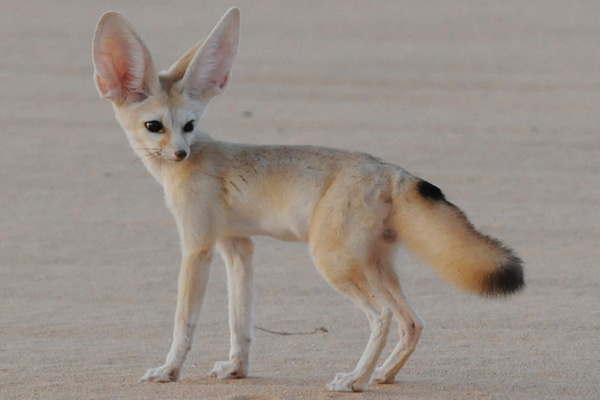

Fennec Foxes as Pets
Although they are extremely cute, Fennec Foxes do not make good pets. Because of their nocturnal nature and their wild behavior, Fennec Foxes are very hard to domesticate.
Although they are extremely cute, Fennec Foxes do not make good pets. Because of their nocturnal nature and their wild behavior, Fennec Foxes are very hard to domesticate.